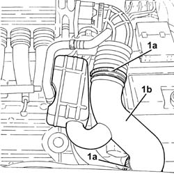

1048A28 VACUUM AIR CIRCUIT RESONATOR PIPE - R+R
- Path
- Procedures > 10 ENGINE UNIT > 1048 ENGINE AIR SUPPLY CIRCUIT > 1048A VACUUM AIR CIRCUIT > 1048A28 VACUUM AIR CIRCUIT RESONATOR PIPE - R+R
- Kind
- repair procedure (removal / refitting; the operation number is the code)
- Applies to
- engines: 3.2 V6; all production periods
- Interactive page
- https://sloeber94.github.io/elrnDB-aGt/en/#/125001018
Applies to: engines: 3.2 V6; all production periods
 Removing
Removing
 Refitting
Refitting1. Loosen the bands (1a) and remove the vacuum air circuit resonator (1b).

Applies to: engines: 3.2 V6; all production periods
Refitting
RemovingPlace the vacuum air circuit resonator back in position and tighten the bands.